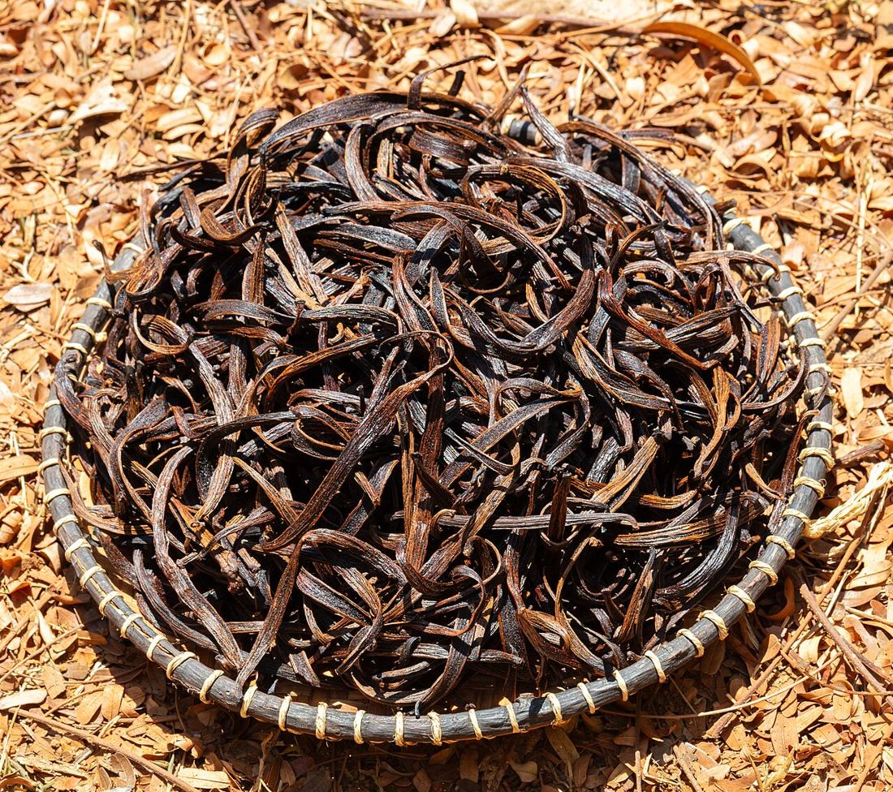
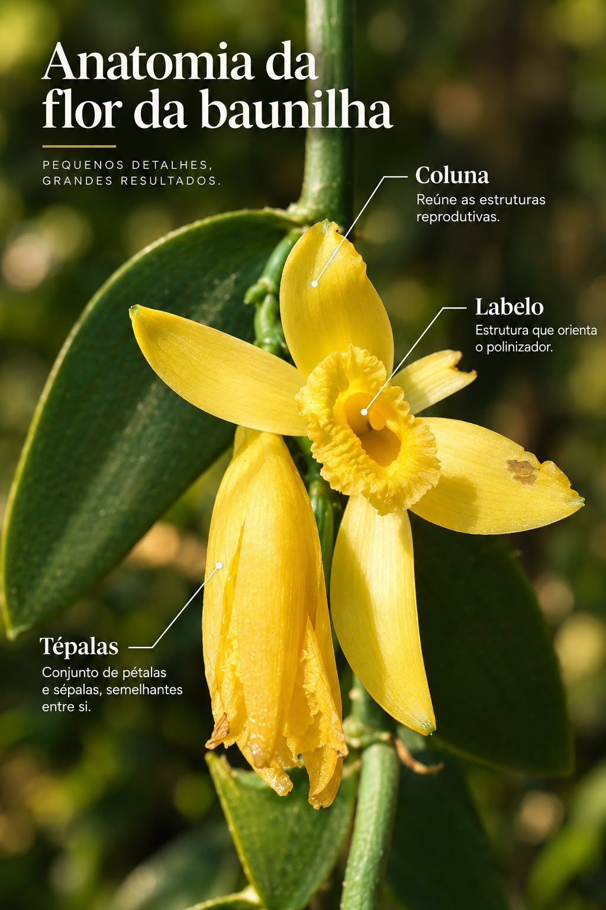
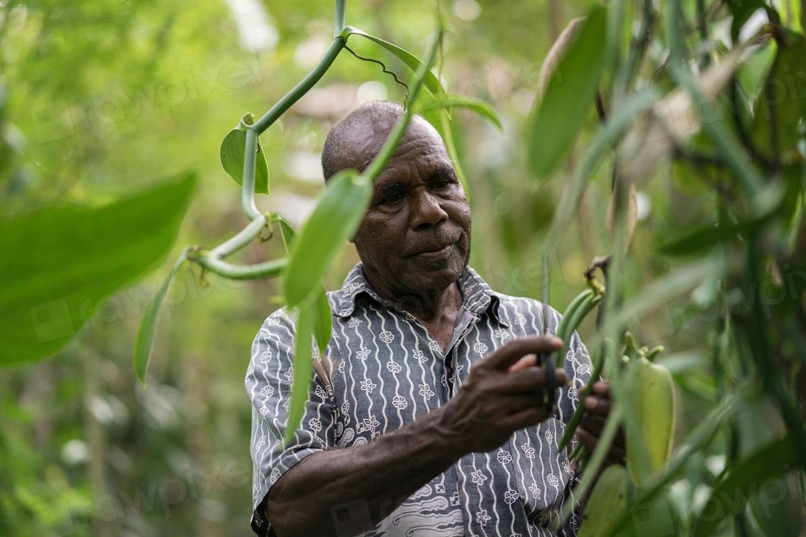

Baunilha, da flor à cozinha
Uma iniciativa para quem quer comprar baunilha e para quem quer começar a produzir, com a orientação técnica da E-Conect.

Qual é o seu interesse?
Escolha um caminho. Cada um tem informações e atendimento próprios.
Da flor à fava
A baunilha é o fruto de uma orquídea. Cada flor, depois de polinizada, dá origem a uma fava verde. Só depois da cura a fava ganha a cor escura e o aroma que conhecemos.
É uma cultura que exige cuidado e paciência. Por isso, informação técnica faz diferença desde o início.

Conheça a flor da baunilha
Entender a flor é o primeiro passo para produzir. Dentro do labelo fica a coluna, que reúne as partes masculina e feminina da flor.
Na baunilha, uma pequena membrana separa essas duas partes. Por isso a flor quase não se poliniza sozinha, e no Brasil a polinização é feita à mão, uma flor por vez.
Quero comprar
Informações para quem procura baunilha para uso próprio, na cozinha profissional ou como insumo.
Produto disponível
[Confirmar produto e forma de apresentação]
Origem
[Confirmar origem da produção]
Qualidade
Uma boa fava é escura, flexível, levemente oleosa e muito aromática. No mercado, as favas mais úmidas e inteiras vão para a cozinha (tipo gourmet) e as mais secas, para extratos.
Aplicações culinárias
Confeitaria, sobremesas, bebidas e também pratos salgados.
Disponibilidade
[Confirmar disponibilidade e informações comerciais]
Pedido de orçamento
Conte a quantidade e o uso pretendido. Respondemos com as condições.
Quero produzir
O que você precisa saber antes de investir no cultivo de baunilha, com acompanhamento da E-Conect.
Implantação
Mudas feitas de estacas da própria planta, plantadas em leirões. Uma referência usada é 1,5 m entre plantas e 5 m entre fileiras.
Estrutura necessária
A baunilha é uma orquídea trepadeira: precisa de 50% a 70% de sombra e de tutores para subir, que podem ser árvores (tutor vivo) ou estacas com arame.
Manejo
Poda de formação, irrigação cuidadosa e polinização manual, flor a flor. No Brasil faltam polinizadores naturais, então sem esse trabalho não há fruto.
Tempo de produção
De 2 a 3 anos do plantio até a primeira floração, e mais 8 a 9 meses até a colheita. Depois, as favas ainda passam pela cura.
Custos
Os principais custos estão na estrutura (sombra, tutores e irrigação), nas mudas e na mão de obra, que é intensa na polinização e na cura. Fazemos a estimativa para o seu caso.
Mercado
O Brasil é um grande importador de baunilha. A produção mundial se concentra em Madagascar, Indonésia, China e México, e o preço oscila bastante com as safras desses países.
Fonte das informações técnicas: Embrapa Amazônia Oriental, Cultivo de Baunilha: uma Alternativa para a Agricultura Familiar na Amazônia.

A polinização é o coração do cultivo
Na época de floração, as flores precisam ser examinadas todos os dias. No pico, são de 2 a 3 horas de trabalho por dia, num ciclo que dura cerca de 30 dias.
É uma cultura de paciência e cuidado. Por isso, planejamento e orientação técnica fazem diferença desde o primeiro ano.
Consultoria e capacitação
Acompanhamento técnico da E-Conect do planejamento à colheita, para decidir com segurança.
Quer fazer parte da iniciativa?
Seja para comprar ou para produzir, deixe seu contato. Avisamos quando houver novidades.